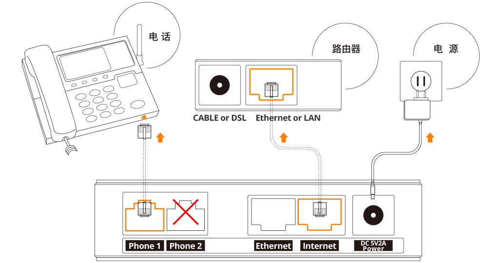

产品使用
故障查询
费率查询
电话盒子安装
安装示意图
蜻蜓家庭电话盒
使用路由器 (Router) 时，iTalkBB家庭电话的安装步骤：
- 请将网线的一头插在iTalkBB家庭电话盒的“Internet"插口，另一头接在您家的路由器的Ethernet（LAN）插口；
- 请将电话线的一头插在iTalkBB家庭电话盒的“Phone 1"插口，另一头接在您的电话机上；
- 请给iTalkBB家庭电话盒接上电源；
没有路由器 (Router) 只有Modem时，iTalkBB家庭电话的安装步骤：
- 断开原有Modem与PC的连接，将网线的一头插在iTalkBB家庭电话盒子的“Internet"插口，另一头接在Modem的"LAN"插口；
- 请将网线的一头接到iTalkBB家庭电话盒的“LAN"插口，另一头接到电脑的“Ethernet"插口；
- 请将电话线的一头插在iTalkBB家庭电话盒的“Phone 1"插口，另一头接在您的电话机上；
- 请给iTalkBB家庭电话盒接上电源；
拨打方式
家庭电话拨打方式：
- 拨打美国和加拿大地区的电话：请拨1 + 地区号码 + 电话号码，例如：1-202-888-8888；
- 拨打国际电话：请拨011 + 国家代码 + 电话号码，例如：011-86-10-88888888；
- 使用免费网内通话服务与其他iTalkBB家庭电话用户通话：请拨对方的899号码；
- 使用美国、加拿大传真：请拨# + 1 + 传真号码，例如：#+1+888-888-8888；
iTalkBB APP国际长途拨打方式：
-
扫描下方二维码下载APP，或者到Apple Store或Google Play搜寻“iTalkBB”, 下载APP并进行安装；

 适用于 iPhone 下载
适用于 iPhone 下载

 适用于 Android 手机下载
适用于 Android 手机下载

 适用于 Android 手机下载
适用于 Android 手机下载
-
安装后, 先浏览“欢迎页面”, 并点击确认服务条款；

-
第一次使用APP时，需要绑定手机号并进行验证码（PIN）验证，验证码为四个数字；

-
手机号验证成功后可以开始使用APP，选择“Wi-Fi拨打”或“手机分钟数拨打”两种拨打方式：
> “Wi-Fi拨打”：免费，不会额外费用；
> “Wi-Fi拨打”：免费，不会额外费用；

-
遵循以下方式，可以直接输入被拨打号码；


中国号码 950 拨打方式：
任何中国的亲友联系您，直拨这个 950 开头的 11 位号码，就能接通您在美国的电话，无需支付任何国际长途费用，就像拨打一个普通市话一样。亲友拨打您的 950 号码时，只需直接输入 950 号码，无需在号码前加拨 1 或其他任何国际区号。了解详情；
台湾通用号码拨打方式：
您的 iTalkBB 蜻蜓电话附带一个台湾通用号码的服务。在台湾的亲友无需支付任何国际长途费用拨打方式：先拨打 02-40660660 或 40502999 的任意 1 个，接通后输入您的 899 号码。了解详情；
转号步骤及查询
转号步骤：
- 在线填写 Letter of Authorization 完成转号申请 http://www.italkbb.com/bb/chs/Transfer/chs_Number_Transfer.asp；
- 或者您需要把现在的电话账单发给 Portin@iTalkBB.com 或传真到 1-800-872-2059；
转号须知：
- 您现在的账单首页必须包括您的名字、地址和电话号码，并且与 Letter of Authorization 上一致；
- 您在转号申请时所提交的名字及地址，必须是所转号码在电话公司注册的名字和地址，即您号码的 Service Address 。如果您对此不清楚，请联系 Local 公司咨询这个号码的 CSR(Customer service record) 资讯。如果您提供的资讯不准确，将会造成转号被拒，延长转号时间，给您造成不必要的麻烦；
- 在转号码期间，请不要取消您现有的本地电话服务，否则号码将被回收；
- 转号成功后，您原本的电话服务将自动被取消，不需要您联系您的电话公司。如果为保险起见，您可以向您的电话公司确认；
转号状态查询：
转号一般需要 2-6 周的时间。转号过程中我们会发邮件通知您转号的进度，或者您可以登录网上账户或者拨打 1-877-482-5503 ，来查询您的转号状态；
转号成功：
转号成功后，要保留的电话号码会转到 iTalkBB 蜻蜓电话，您原本的电话服务将自动被取消；
转号失败：
大部份的电话号码都可成功转号，但有少数 DSL 的用户，由于上网和电话线在一起，所以无法只取消电话服务而保留上网服务。因此，如果您是 DSL的用户，请在申请转号前，与你的电话公司确认是否可以转号后再与我们联系转号，否则可能会造成号码丢失等损失；
产品功能
iTalkBB APP - 让您用手机直接拨打国际长途
iTalkBB APP 是一款为 iTalkBB 蜻蜓电话用户免费提供国际通话的手机拨打工具，让您免费或以超低费率拨打国际长途电话。支持 Wifi（数据）拨打，及手机分钟拨打两种模式。您在使用时，只需直拨目的地号码，也可直接使用手机通讯录中的联络人讯息，无需再输入接驳号。注册之后，马上下载，便能完全替代您现有手机公司的付费国际长途功能。查看使用方式，请点击iTalkBB APP国际长途拨打方式；
中国号码 950
iTalkBB 蜻蜓电话的用户除了获有一个常规的美国号码之外，可以再获得一个以 950 开头的"模拟的中国本地号码"。美国的亲友联系您，拨打您的美国号码。而您所有的中国亲友联系您，只要直拨这个 950 开头的11位号码，就能打通您在美国的电话，完全无需支付任何国际长途费用，就像在拨打一个普通市话一样。使用说明：
> iTalkBB 家庭电话的用户根据计划不同，自动享有不同时长的免费中国号码 950 服务；优惠期满后，可继续以 $0.99/月的优惠价格享受此服务（原价 $2.99/月）；
> 在您注册服务后，我们会将您的 950 号码发送到您的邮箱；
> 您也可以登录您的网上账户，在"账户资讯"页面查到您的 950 号码，并在“增值服务"菜单下“特色服务"中，选择更换号码或取消本项服务；
台湾通用号码
- iTalkBB 蜻蜓电话为您免费提供一个免费的台湾通用号码。您在台湾的亲友可以拨打这个通用号码，然后再拨打您的 899 号码，随时与您取得联系；
- 亲友无需支付任何国际长途费用拨打方式：先拨打 02-40660660 或 40502999 的任意 1 个，接通后输入您的 899 号码，就可接通您的电话；
- 如果您的亲友在台北县市内，他们拨打此号码只需支付市话费；如果他们不在台北县市内，则需支付台湾当地的国内长途费用；
香港、台湾、韩国本地直拨号码
iTalkBB 蜻蜓电话的用户除了获有一个常规的美国号码之外，可以再购买模拟的香港、台湾，或韩国的本地号码。美国的亲友联系您，拨打您的美国号码。而您所有的当地亲友联系您，只要直拨您购买的当地直拨号码，就能打通您在美国的电话，完全无需支付任何国际长途费用，就像在拨打一个普通市话一样。使用说明：
>
香港本地号码 只需 $4.99/月，可获 +852 国码的香港本地号码，如 +852--XXXX-XXXX;
台湾本地号码 只需 $4.99/月，可获台北区码 02 的台湾本地号码，如 +886-2-XXXX-XXXX;
韩国本地号码 只需 $4.99/月，可获一个韩国本地号码，如 +82-XX-XXX-XXXX;
> 在您开通本服务后，我们会将您的本地直拨号码发送到您的邮箱，您也可以登录您的网上账户，在"账户资讯"页面查到您的本地直拨号码；您的本地直拨号码是 专属于您的号码，可以在“增值服务"菜单下“特色服务"中，选择更换号码或取消本项服务；
来电转移-设置方法
来电显示
来电等候
三方通话—使用方法
免费网内通话：
如果您有亲朋好友也是 iTalkBB 家庭电话的用户，那么您只要直拨他们的 899 号码，就能和他们免费通话；
语音信箱—使用方法
E911：
保护您的住宅安全，对 iTalkBB 家庭电话来说非常重要。iTalkBB 家庭电话用 VOIP 网络为您提供紧急呼叫服务。在遇到突发状况，当您使用电话寻求救援时，救援机构能立刻看到您在 iTalkBB 注册的地址。如果您搬家了，只要登录您的账户，在“账户设定"菜单下选择 “E911地址"，即可在线更新您的地址；
传真
- iTalkBB 蜻蜓电话为您提供免费的国内传真服务使用方法：按#号键 +1+ 传真号码；
- 国内传真服务为免费服务，无功能费用，但使用时间将计入通话时间，按费率收费，包月用户则无需支付任何费用；
有问题？我们将为您竭解答。
>
24小时人工客服
专人为您服务
- 致电我们
- 微信我们
- 到体验店